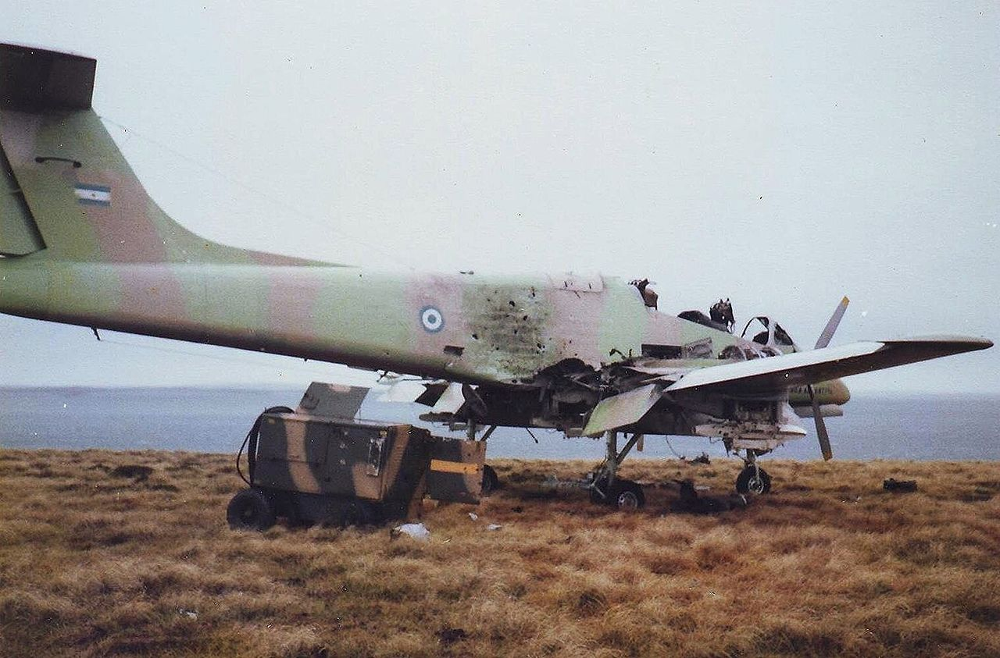
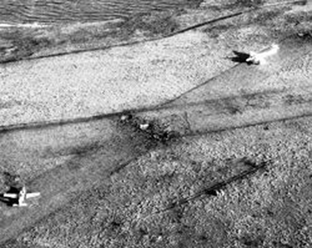
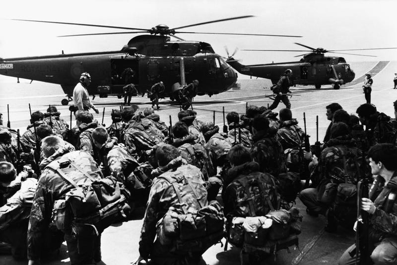
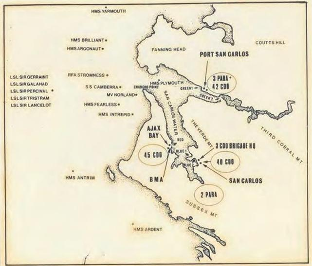
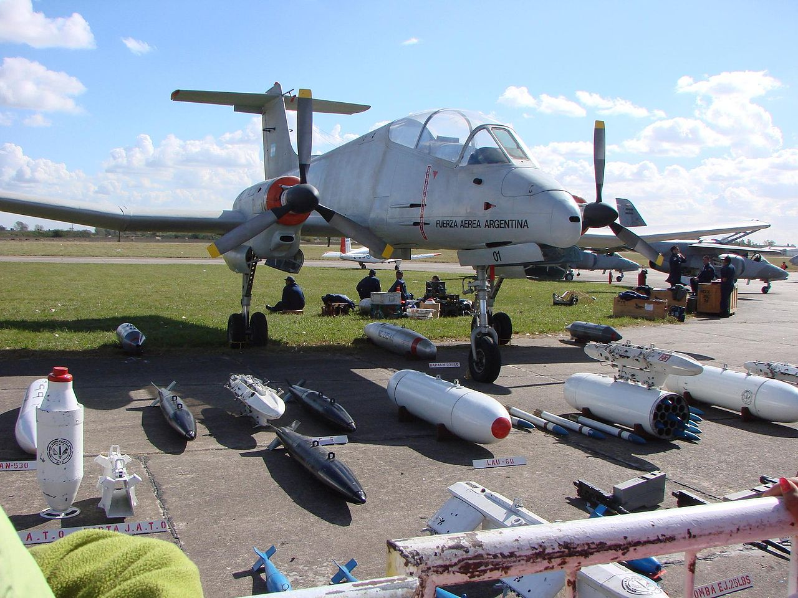
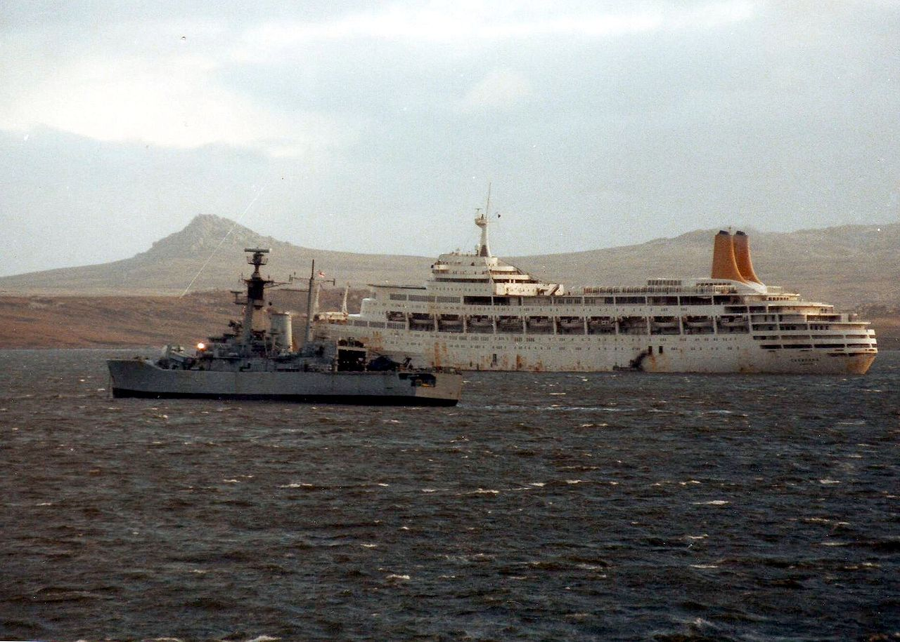
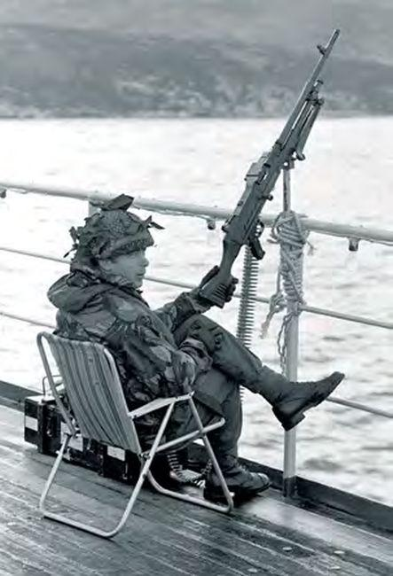

포클랜드 전쟁 잡담 - 뒤죽박죽 상륙작전
게시: 2022-03-10T06:30:31+09:00
<진작 물어볼 걸> 보통 포클랜드 전쟁 당시 영국군이 미군으로부터 위성사진이니 뭐니 해서 아르헨티나 수비군의 온갖 세밀한 정보를 다 가지고 있었을 것이라고 생각하지만 실상은 별로. 영국군은 포클랜드 섬 정확히 어디어디에 활주로가 있고 어디에 경공격기들이 배치되었는지도 명확히 파악하지 못함. 단지 아르헨군의 무선통신 도청 및 암호 해독은 꽤 잘 되었음. 가령 아르헨티나군의 무전 속에 'Calderon'이라는 항공기지 이름이 나오는데, 이게 포트 스탠리를 말하는 건지 혹은 아르헨티나 본토의 공군기지 이름을 말하는 것인지 전혀 몰랐음. 정보부가 열심히 분석한 끝에 아무래도 칼데론은 여태까지 영국군이 파악하고 있던 것 이외의 추가적인 활주로를 지칭하는 것 같다고 결론을 내렸고, 이에 따라 항공 정찰을 통해 포클랜드 서(West) 섬 북쪽에 있는 Pebble 섬에 작은 임시 활주로와 푸카라 경공격 등이 배치된 것을 확인하고 SAS 특공대가 야간에 헬기로 몰래 잠입하여 항공기에 폭약을 설치하고 지원나온 구축함의 함포 사격과 함께 공격, 11대의 항공기를 모두 파괴. 그러나 나중에 내린 결론은 '그냥 구축함의 함포 사격만 해도 아르헨 항공기 파괴에는 충분했다'는 것. 마찬가지로 상륙지점인 San Carlos 일대에 아르헨티나 지상군이 배치되었다는 것도 무선 도청을 통해서 비로소 파악. 정보부는 EC Guemes이 산 카를로스 만의 입구인 Fanning Head에 도착했다는 무선을 도청했으나 대체 EC Guemes가 뭔지 몰라 한참 고민. 그러다 이 고민이 로열 마린에 배속된 통역 장교인 Rod Bell 대위에게까지 알려지자 벨 대위가 즉각 해석. "아 쉽쟎아요, EC라는 건 스페인어로 Equipo Combate의 약어이고, Combat Team이라는 뜻이에요. 그러니까 패닝헤드에 중대병력이 와있는 것이고, 아마 거기에 박격포나 그런 지원화기도 와있겠네요." 그래서 상륙 전에 SBS팀이 먼저 투입되어 패닝헤드의 아르헨티나 지상군을 상대하게 된 것.
 
<뻘쯤함의 연속> 산 카를로스 상륙 당일, 새벽 1시부터 영국군 특수부대 SBS는 헬리콥터로 산 카를로스의 Fanning Head 인근에 투입되기 시작. 보통 영화에서 볼 때는 특수 헬기 여러대가 은밀히 날아가 한꺼번에 특공대를 투입하고 순식간에 특공대가 멍청한 악당들을 제압하지만, 현실은 초라했음. 총 35명이 투입되었는데, SAS가 아니라 SBS라서 그랬는지 배정된 헬기는 Sea King 1대 뿐. 원래 Sea King에는 28명의 무장병력이 탑승할 수 있었으나, 제조업체가 말하는 최대라는 수치는 현실적인 수치도 아니고, 게다가 이들은 박격포 등 꽤 무거운 장비를 갖추고 있었으므로 결국 4번에 걸쳐 털털거리는 헬기로 왔다갔다 하며 특수부대를 투입. 패닝 헤드의 아르헨티나 분견대도 당연히 '뭔가 일어나고 있다'라는 것을 알고 바짝 긴장. 그러나 의외로 할 수 있는 것이 별로 없음. 정확히 어디에 헬기가 착륙하는지도 잘 모르는데, 60여 명 밖에 없는 분견대 중 일부를 캄캄한 어둠 속으로 갈라보낼 수는 없는 일. 그러던 와중에 바다에서 선박들이 나타나는 것을 보고 더욱 진지에 붙어있기로 작정하고, 사정거리도 잘 모르면서 그 먼 거리의 정체불명의 선박들을 향해 스페인제 88mm Installaza (일종의 무반동총)과 7.62mm 기관총을 난사하기 시작. 한편, 아르헨군 초소로부터 2km 밖에 떨궈진 SBS팀은 몸이 달아오른 상태. 이들이 받은 명령은 섣불리 나서지 말고 먼저 HMS Antrim의 4.5인치 주포 2문이 충분히 아르헨군을 두들길 때까지 기다리라는 것. 그러나 일단 총성이 울리고 포탄이 터지면 군인들은 약간 이성을 상실하기 마련. 특히 HMS Antrim의 2문의 주포 중 1문에 역시나 영국제답게 고장이 나서 포격 시작이 지연된다는 무전통신을 들은 이들은 눈 앞에서 치열한 사격전이 벌어지는데 가만히 있어야 한다는 것에 참을 수가 없었는데, 그런 경향은 특히 박격포탄을 짊어지고 있던 병사들에게 특히 강했음. (전후 인터뷰에서 증언하기를) 지긋지긋하게 무거운 박격포탄들을 빨리 날려버리고 싶었기 때문. 결국 이들은 명령에 어긋나게 앤트림 호보다 먼저 박격포를 쏘기 시작했는데, 20방 넘게 쏘았으나 단 한 방도 명중을 시키지 못했음. 심지어 쏜 포탄이 대체 어디에 떨어졌는지 떨어진 포탄이 터지는 소리조차 듣질 못했음. 멋적어진 이들은 사격을 중단. 다행히 앤트림이 고장난 주포 문제를 해결하고 포격을 시작하여 이들의 뻘쯤함을 덮어주었음. 앤트림의 포격은 지상 150m 상공에서 폭발하도록 맟춰져 있었는데, 이 포격을 본 SBS팀은 '마치 대마법사 멀린의 암흑의 힘을 뿜어내는 것 같았다'라고 표현. 이 포격으로 사상자가 발생하고 이스탈라사 무반동포가 망가지자, 결국 패닝헤드의 아르헨티나군은 못 버티고 후퇴. SBS팀과 함께 투입되었다가 후퇴하는 이들을 본 통역장교 Rod Bell 대위는 원래 투입 목적대로 쥐고 있던 메가폰으로 '항복하라'를 스페인어로 외침. 그러나 바람이 심해서 그런지 그의 악을 쓴 목소리를 아르헨티나군은 듣질 못함. 결국 SBS가 발포했고, 아르헨티나군도 응사하면서 벨 대위도 뻘쯤함에 동참. 결국 아르헨군 대부분은 그대로 철수.
** 사진은 HMS Hermes에서 Sea King 헬기에 탑승을 대기 중인 SAS팀.

<긴가민가> San Carlos 상륙작전은 인류 역사상 처음으로 대공 미쓸로 무장한 현대적 함대가 제트 공격기들의 공습 하에서 벌인 상륙작전. 영국군이 Port Stanley에서 먼 이 곳을 상륙 지점으로 고른 이유는 여러가지가 있지만 해군 입장에서는 아르헨티나 잠수함과 공중 발사 엑조세 미사일의 공격으로부터 안전한 좁은 해역이라는 점이 컸음. 영국군이 산 카를로스에 아르헨티나 소규모 분견대가 배치된 것을 보고 자신들의 상륙 계획이 들통난 것인가 하며 전전긍긍했는데 반해서, 아르헨티나 입장에서는 대형 함정이 들어올 수도 없고 포트 스탠리와 정반대인 그 곳에 상륙을 할 리가 없다는 이유로 여기에 영국군이 상륙한다는 생각을 안하고 있었음. 그래서 새벽에 교전이 벌어지고 헬리콥터들이 요란하게 날아다니는 와중에도, 이걸 상륙작전이라고 생각하지 않았음. 그러다 아침 6시 경부터 크고 하얀 배(여객선인 Canberra)를 포함한 여러 척의 배들이 산 카를로스 만 안에 들어오고 그 크고 하얀 배와 해안 사이에 상륙주정이 오가는 것을 보고나서인 오전 8시 20분 경에야 '영국군 상륙'을 무전으로 알림. 그러나 포트 스탠리의 아르헨티나 지휘부는 거기가 상륙지점이라고는 믿지 않았고, 단지 그건 아르헨티나를 속이기 위한 기만 작전일 것이라고 생각. 그들은 '속는 셈 치고' 포트 스탠리에 배치된 프로펠러 경공격기인 Pucara를 날려 상황을 살펴보기로 함.
 
<아, 우린 그게 그건지 몰랐지> 아르헨티나가 자체 제작한 Pucará는 '요새'라는 뜻으로서, 보통 COIN (counter-insurgency)기라고 알려진 프로펠러 경공격기. 아르헨티나가 만들었다고 우습게 봐서는 안되고 의외로 미군의 유명한 COIN기인 OV-10 Bronco보다 더 빠르고 튼튼하고 무장도 든든. 산 카를로스에서 부지런히 병력과 장비, 물자를 하역 중인 영국 함대에 나타난 첫 아르헨티나 항공기가 바로 이것. 그냥 설마하고 정찰을 나왔던 푸카라 조종사 Crippa 중위의 눈에 들어온 것은 잔뜩 몰려온 영국 구축함들과 각종 상륙선과 화물선. 특히 좁은 산 카를로스 만 안에는 크고 하얀 여객선인 Canberra(4만5천톤, 25노트)가 눈에 잘 띄었음. 푸카라에는 무유도 로켓탄인 Zuni 로켓과 7.62mm 기관총 4정, 그리고 20mm Hispano 기관포 2문까지 달려 있었는데, 크리파 중위는 2번 함대 위를 선회한 뒤 용감하게도 곧장 로켓과 기관포를 이용해 Leander급 프리깃함인 HMS Argonaut (3200톤, 28노트)과 캔버라 호를 공격. 원래 호화 여객선으로서 지중해 유람 중에 끌려온 캔버라에는 제3 코만도 여단 전체가 타고 있었고 그 난간에는 대공 방어용으로 12.7mm 및 7.62mm 보병용 기관총들을 밧줄로 묶어 고정해놓았는데, 캔버라의 영국군도 이걸 이용하여 요란한 총격전이 벌어짐. 결국 이 용감한 푸카라는 프리깃함들의 대공 사격으로 격추. 이때는 이미 아르헨티나 본토 공군기지에서 진짜 제트 전투기들이 날아오고 있었음. 그러나 이후 이어전 공습에서, 푸카라와는 달리 아르헨 전투기들은 누가 봐도 눈에 띄는 큼직한 먹이이자, 영국군이 목숨을 걸고 지켜야 했던 캔버라에는 공격을 가하지 않음. 그 이유에 대해 영국군은 아르헨 전투기들이 좀더 가치있는 표적인 구축함 및 프리깃함들을 공격하는데 치중했기 때문이라고 생각했으나, 전쟁이 끝난 이후 아르헨 조종사들은 '크고 하얀 배가 병원선인 줄 알았다'라고 주장.
 